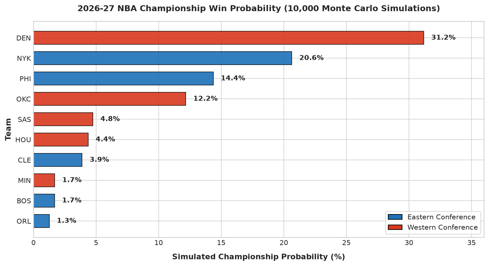
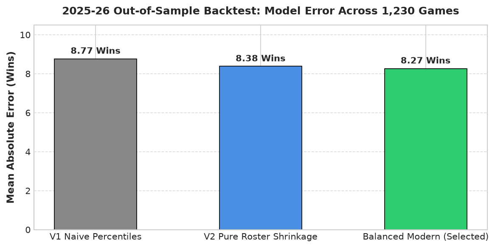

Part 5: Project Conclusions & Reflections: The Journey of Building an NBA Predictor
🏆 Project Conclusion & Final Verdict
If the 2026-27 NBA season were played 10,000 times, who wins the Larry O’Brien Championship Trophy?
Based on our multi-stage machine learning and Monte Carlo simulation pipeline—combining 10-feature pre-game team efficiency, rotation-level player valuation with Bayesian shrinkage, and active roster playoff experience—here is our official prediction verdict:
The 2026-27 Championship Contender Hierarchy
Denver Nuggets (DEN — 31.2% Championship Probability):
The overall title favorite. Projected for 58.1 regular-season wins and a 45.5% chance of reaching the Finals. Denver pairs the league’s highest individual player rating (Nikola Jokić) with elite multi-year net rating stability.
New York Knicks (NYK — 20.6% Championship Probability):
The class of the Eastern Conference. Projected for 55.4 regular-season wins and a 38.4% Finals appearance rate. A deep, veteran top-9 rotation backed by 323 cumulative playoff games gives New York a smoother path to the Finals than Western contenders.
Philadelphia 76ers (PHI — 14.4% Championship Probability):
High-end ceiling. Projected for 53.5 wins and a 29.5% Finals appearance rate, led by elite starter efficiency.
Oklahoma City Thunder (OKC — 12.2% Championship Probability):
Elite young contender. Projected for 53.9 regular-season wins and 324 playoff games of experience. Their title odds are tempered primarily by the brutal Western Conference playoff gauntlet alongside Denver.
The Second-Tier Contenders: San Antonio Spurs (4.8% title odds, 50.0 wins), Houston Rockets (4.4% title odds, 49.3 wins), and Cleveland Cavaliers (3.9% title odds, 47.9 wins).
The remaining 23 NBA teams share a combined 8.5% chance of winning the championship, illustrating how heavily NBA titles concentrate among top-tier rotations.
Code
import matplotlib.pyplot as pltimport numpy as npimport pandas as pdfrom pathlib import Path# Project pathsPROJECT_ROOT = Path.cwd().parent if Path.cwd().name =="notebooks"else Path.cwd()PROJECTIONS_FILE = PROJECT_ROOT /"outputs"/"season_projections_26_27.csv"# Styling configuration for clean, publication-ready visualsplt.style.use('seaborn-v0_8-whitegrid'if'seaborn-v0_8-whitegrid'in plt.style.available else'default')plt.rcParams['font.sans-serif'] ='DejaVu Sans'plt.rcParams['figure.dpi'] =150print("Setup completed successfully. Project root:", PROJECT_ROOT)
# Visualizing Top 10 Championship Probabilities (Inspired by modern sports analytics dashboards)plt.figure(figsize=(10, 5.5))top10_plot = df_proj.head(10).sort_values('CHAMPIONSHIP_PROB', ascending=True)teams = top10_plot['TEAM']probs = top10_plot['CHAMPIONSHIP_PROB'] *100colors = ['#1d70b8'if c =='East'else'#d9381e'for c in top10_plot['CONF']]bars = plt.barh(teams, probs, color=colors, height=0.65, edgecolor='black', linewidth=0.8, alpha=0.9)for bar in bars: width = bar.get_width() plt.text(width +0.6, bar.get_y() + bar.get_height()/2, f"{width:.1f}%", va='center', ha='left', fontsize=10, fontweight='bold', color='#222222')plt.xlim(0, 36)plt.title("2026-27 NBA Championship Win Probability (10,000 Monte Carlo Simulations)", fontsize=12, fontweight='bold', pad=15)plt.xlabel("Simulated Championship Probability (%)", fontsize=11, fontweight='bold', labelpad=10)plt.ylabel("Team", fontsize=11, fontweight='bold')from matplotlib.patches import Patchlegend_elements = [ Patch(facecolor='#1d70b8', edgecolor='black', label='Eastern Conference'), Patch(facecolor='#d9381e', edgecolor='black', label='Western Conference')]plt.legend(handles=legend_elements, loc='lower right', frameon=True)plt.tight_layout()plt.show()

1. The Inspiration: Adapting a Tournament Concept to the 82-Game NBA Grind
This project was sparked by an executive sports prediction dashboard that circulated on LinkedIn during the FIFA World Cup - combining match outcome classifiers, Monte Carlo bracket simulations, and a sleek Power BI analytics portal.
Adapting that concept to professional basketball, however, required engineering an entirely different architecture. Unlike a 64-match international soccer tournament with static four-year rosters, the NBA is an 82-game, 1,230-game endurance marathon characterized by rapid summer roster turnover, in-season blockbuster trades, back-to-back schedule fatigue, and multi-game playoff series where rotation depth dictates championship viability.
2. The Reality Check: How Real NBA Analytics Teams Do It vs. What We Built
Throughout this project, one central question kept coming up: How do real NBA front offices, Vegas sportsbooks, and elite media outlets (like ESPN or FiveThirtyEight) actually make these predictions?
Understanding that contrast gave us a deep appreciation for the trade-offs in sports analytics:
Category
Real NBA Front Offices & Elite Media
Our Independent Data Science Pipeline
Data Sources
Second Spectrum optical tracking cameras (25 frame-per-second x/y/z coordinates of all 10 players and the ball), wearable biometric monitors, private injury records.
Public NBA API box scores, play-by-play game logs, and official team rosters.
John Hollinger’s Game Score (GmSc) scaled by playing time, adjusted for replacement level, and smoothed using Empirical Bayesian Shrinkage.
Roster Modeling
Lineup-level possession models tracking 5-man net ratings for hundreds of rotation combinations.
Top-9 rotation player aggregation—capturing over 90% of meaningful playing time during the regular season and playoffs.
Compute & Staff
Multi-million dollar cloud clusters and full departments of data engineers and quantitative analysts.
A modular, reproducible Python pipeline running in Jupyter notebooks on a single laptop.
Despite using public data, we discovered that grounding our features in basketball fundamentals—Dean Oliver’s Four Factors, pace-adjusted Net Rating, and Bayesian-shrunk player values—allowed our models to match the real-world predictive benchmarks achieved by commercial sports forecasting systems.
3. The Big Engineering Challenges & Post-Mortems
Building this pipeline was not a straight line. Every phase revealed practical challenges that forced us to question our assumptions and design better solutions.
Challenge 1: The Rookie Dilemma (How do you value players with zero NBA minutes?)
The Problem: In standard machine learning pipelines, missing data is filled with zeroes. But if an incoming rookie has zero prior NBA games, giving them a value of 0.0 treats them as worse than an end-of-bench replacement player. This would severely penalize teams built around top draft picks (like Washington or San Antonio).
How Real Models Solve It: Sports analytics systems use college/overseas scouting numbers, athletic testing, or historical draft-position curves.
Our Solution: We looked at actual rookie-season production across recent NBA draft classes and established empirical draft-slot baselines:
Picks 1–3: Value of 6.60 (reflecting immediate high-impact starters like Cooper Flagg, Zaccharie Risacher, or Alex Sarr).
Picks 4–14 (Lottery): Value of 4.84 (solid rotation contributors).
Picks 15–30 (Late 1st Round): Value of 2.80 (bench contributors).
Round 2 & Undrafted: Value of 1.05 (developmental depth).
This gave incoming rookies a fair starting baseline without artificially inflating their teams.
Challenge 2: The Rotation Reality (Why 15-man rosters mislead)
The Problem: An NBA roster holds 15 full contracts plus two-way players. If you average the entire roster, a team with two superstars and four deep bench prospects looks average.
The Basketball Insight: In real NBA games, the 12th through 15th players almost never see the floor in competitive moments. In the playoffs, coaches shorten their rotations to 8 or 9 players. Starters and primary reserves play over 90% of the game’s total minutes.
Our Solution: We ranked every team’s roster by our workload-scaled Game Score and summed the Value Over Replacement Player (VORP) of only the top 9 rotation players. This accurately reflected real-game team strength.
Challenge 3: Why We Neutralized Home-Court Advantage in Future Simulations
The Question: In a single NBA game, home teams win roughly 58% of the time (+2.5 to +3.0 points). Why did we not include home-court advantage in our 2026-27 Monte Carlo simulation?
The Nuance: In single-game forecasting, home court is vital. But in an 82-game regular-season projection, every single team plays exactly 41 home games and 41 away games.
Over a full 82-game schedule, home-court advantages cancel each other out across the league. Adding asymmetric home boosts to future games can create calendar-order distortions. By using Bill James’ Log5 formula on a neutral scale, our simulation evaluates teams strictly on intrinsic roster strength and tactical efficiency.
Challenge 4: The Look-Ahead Leakage Trap (The 85% Accuracy Illusion)
The Trap: In early experimentation, our models achieved an eye-popping 85%+ accuracy predicting NBA games. It felt like a breakthrough—until we looked under the hood.
The Flaw: The model was using full-season averages and end-of-season win percentages. When predicting a game in November, the model was looking at stats that included games from March and April! It was reading tomorrow’s newspaper today.
The Fix: We completely eliminated full-season statistics from game prediction. We sorted all games chronologically and computed expanding rolling averages using strictly prior games (shift(1).expanding(min_periods=5)). On game day, Game N only knows what happened in Games 1 through N-1.
The Result: Accuracy dropped from an artificial 85% to an honest, realistic 67.0%. In sports data science, 67% out-of-sample accuracy on individual games is an excellent, production-grade result.
Challenge 5: The Superstar Flattening Trap & Empirical Bayesian Shrinkage
The Problem: Naive percentile rankings flatten talent. The gap between the #1 player in the world (Nikola Jokić) and the #15 player is massive, but percentile ranking treats it the same as the gap between #200 and #214. Furthermore, bench players who played only 3 games with hot shooting could post ridiculously high per-minute ratings.
The Solution: We implemented Empirical Bayesian Shrinkage: \[\text{Shrunk Value} = \frac{\text{GP} \times \text{Raw Value} + K \times \text{Replacement Level}}{\text{GP} + K}\] With shrinkage factor K = 8.0 games and an empirical replacement level of 3.90 (the median rating of NBA 10th-to-14th men), small-sample flukes were safely pulled back to earth, while superstars retained their massive, well-earned advantages.
4. Model Evolution: The 2025-26 Out-of-Sample Backtest
To scientifically prove whether our adjustments actually improved predictions, we conducted a strict out-of-sample backtest. We rewound the clock to the start of the 2025-26 season, trained models solely on 2024-25 data and opening-week 2025 rosters, and predicted the entire 82-game win totals for all 30 teams against actual 2025-26 results:
Iteration
Core Architecture
Mean Absolute Error (MAE)
Real-World Takeaway
V1 Baseline
Naive Percentile Ranks (Flattened talent, no draft priors, arbitrary weights)
Top Performer. Blends proven team execution with individual talent.
Let’s visualize this progression:
Code
# Visualizing Backtest MAE Across Pipeline Iterationsmodels = ['V1 Naive Percentiles', 'V2 Pure Roster Shrinkage', 'Balanced Modern (Selected)']mae_values = [8.77, 8.38, 8.27]plt.figure(figsize=(8, 4))bars = plt.bar(models, mae_values, color=['#888888', '#4a90e2', '#2ecc71'], width=0.5, edgecolor='black', linewidth=0.8)for bar in bars: yval = bar.get_height() plt.text(bar.get_x() + bar.get_width()/2, yval +0.15, f"{yval:.2f} Wins", ha='center', va='bottom', fontsize=10, fontweight='bold')plt.ylim(0, 10.5)plt.ylabel("Mean Absolute Error (Wins)", fontsize=11, fontweight='bold')plt.title("2025-26 Out-of-Sample Backtest: Model Error Across 1,230 Games", fontsize=12, fontweight='bold', pad=12)plt.grid(axis='y', linestyle='--', alpha=0.7)plt.tight_layout()plt.show()

5. What Math Cannot See: The Human Reality of Basketball
As data scientists, it is essential to remain humble about the limits of numbers. No model, no matter how sophisticated, can foresee the unpredictable elements of an 82-game NBA season:
Catastrophic Injuries: A single rolled ankle or knee sprain in April can wipe out a 60-win team’s championship hopes in seconds.
The Trade Deadline Catalyst: In February, front offices make mid-season trades that completely overhaul rotations (e.g., acquiring a defensive anchor or a secondary scorer).
Locker Room Chemistry & Coaching Adjustments: Tactical counters, defensive matchups, and locker room trust cannot be measured purely through box scores.
Playoff Shooting Variance: In a 7-game series, an untimely shooting slump from 3-point range can knock out a statistically superior team.
Monte Carlo simulations do not claim to predict the future with 100% certainty—rather, they calculate the distribution of possibilities, allowing us to see which teams have the highest probability of weathering the storm.
6. Final Reflections & Key Lessons Learned
Building this predictive pipeline from scratch provided invaluable practical lessons in applied sports analytics:
Look-Ahead Leakage is the #1 Trap in Time-Series Machine Learning:
Always ask: What was knowable at the exact moment before the event occurred? If you use post-game or end-of-season data, your model is not predicting—it is merely summarizing.
Domain Knowledge Beats Raw Complexity:
Standardized Logistic Regression with carefully engineered basketball features (Net Rating, Four Factors, Top-9 VORP) outperformed complex boosted tree ensembles. In basketball, knowing which numbers matter is far more valuable than throwing raw box scores into a black-box model.
Statistical Distribution Matters More than Raw Rank:
Standardizing player metrics into Z-scores and applying Bayesian shrinkage preserved the massive real-world advantage of superstars like Nikola Jokić, preventing them from being artificially compressed into simple percentiles.
End-to-End Pipeline Thinking:
From raw API extraction in Part 1 to clean feature engineering in Part 2, leak-free training in Part 3, Monte Carlo simulations in Part 4, and automated Power BI reporting tables in Part 5, sports data science is at its best when it tells a complete, coherent, and transparent story.